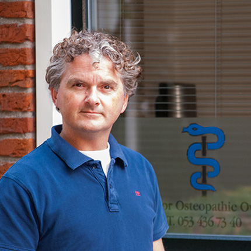
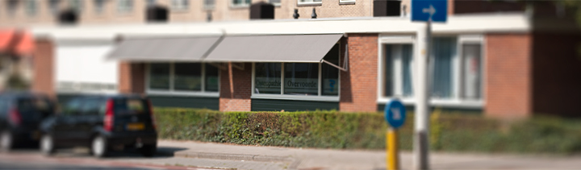

Osteopaat in Enschede
Peter Overvoorde is geregistreerd osteopaat en werkt sinds 2007 fulltime vanuit zijn praktijk aan de Oliemolensingel in Enschede. Met zachte manuele technieken.


Oliemolensingel 202, 7511 BE Enschede. Een verwijzing van een arts is niet nodig.
Het lichaam is een biologische eenheid. Raakt het evenwicht verstoord, door een ongeluk, operatie, infectie of stress, dan kan het lichaam hulp gebruiken om zichzelf te herstellen.
Bewegingsverlies in een bepaalde lichaamsstructuur geeft vaak een functiestoornis, soms met chronische klachten. Osteopathie richt zich niet alleen op pijnbestrijding, maar op het zelfhelend vermogen van het lichaam.
De behandeling richt zich op de plek waar het bewegingsverlies het grootst is. Dat hoeft niet de plek te zijn waar u de pijn voelt, want bewegingsapparaat, organen en schedelstructuren hangen nauw samen.
Een behandeling duurt gemiddeld 45 tot 60 minuten. Tussen twee behandelingen zit een tot twee weken. Hoe verder het herstel vordert, hoe verder de afspraken uit elkaar liggen.
Vrijwel alle zorgverzekeraars vergoeden osteopathie geheel of gedeeltelijk, afhankelijk van uw aanvullende verzekering en mits de behandelaar geregistreerd osteopaat is. Osteopathie valt niet binnen het eigen risico.